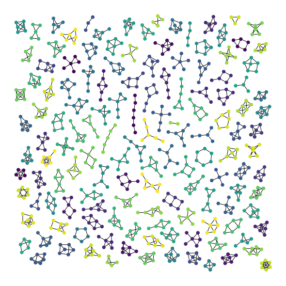

Atlas of all graphs of 6 nodes or less.¶
Author: Aric Hagberg mailto:hagberg@lanl.gov
Copyright (C) 2004-2016 by Aric Hagberg mailto:hagberg@lanl.gov, Dan Schult mailto:dschult@colgate.edu, Pieter Swart mailto:swart@lanl.gov.
All rights reserved. BSD license.
First, we create a function that returns the disjoint union of each nonisomorphic connected graph on six or fewer nodes.
import networkx as nx
from networkx.generators.atlas import graph_atlas_g
from networkx.algorithms.isomorphism.isomorph import graph_could_be_isomorphic as isomorphic
def atlas6():
""" Return the atlas of all connected graphs of 6 nodes or less.
Attempt to check for isomorphisms and remove.
"""
Atlas = graph_atlas_g()[0:208] # 208
# remove isolated nodes, only connected graphs are left
U = nx.Graph() # graph for union of all graphs in atlas
for G in Atlas:
zerodegree = [n for n in G if G.degree(n)==0]
for n in zerodegree:
G.remove_node(n)
U = nx.disjoint_union(U, G)
# list of graphs of all connected components
C = [U.subgraph(c) for c in nx.connected_components(U)]
UU = nx.Graph()
# do quick isomorphic-like check, not a true isomorphism checker
nlist = [] # list of nonisomorphic graphs
for G in C:
# check against all nonisomorphic graphs so far
if not any(isomorphic(G, H) for H in nlist):
nlist.append(G)
UU = nx.disjoint_union(UU, G) # union the nonisomorphic graphs
return UU
Create the graph and count the number of its nodes, edges, and connected components.
G = atlas6()
print("graph has %d nodes with %d edges" % (nx.number_of_nodes(G), nx.number_of_edges(G)))
print(nx.number_connected_components(G), "connected components")
graph has 779 nodes with 1073 edges
137 connected components
Compute a layout for the graph and draw the graph with this layout. Color the nodes of each connected subgraph a random color.
%matplotlib inline
import matplotlib.pyplot as plt
import random
try:
import pygraphviz
from networkx.drawing.nx_agraph import graphviz_layout
except ImportError:
try:
import pydot
from networkx.drawing.nx_pydot import graphviz_layout
except ImportError:
raise ImportError("This example needs Graphviz and either PyGraphviz or pydot")
plt.figure(1, figsize=(8, 8))
# layout graphs with positions using graphviz neato
pos = graphviz_layout(G, prog="neato")
# color nodes the same in each connected subgraph
C = [G.subgraph(c) for c in nx.connected_components(G)]
for g in C:
c = [random.random()] * nx.number_of_nodes(g) # random color...
nx.draw(g,
pos,
node_size=40,
node_color=c,
vmin=0.0,
vmax=1.0,
with_labels=False
)
plt.show()
